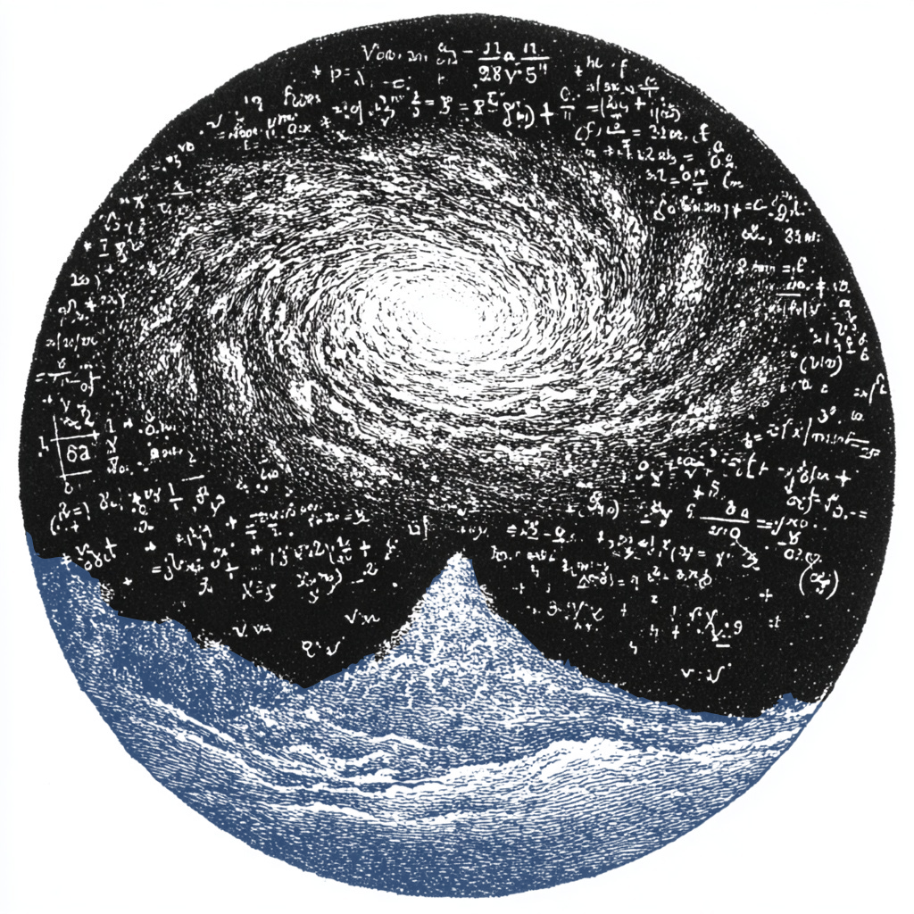

1.1. Algebras
High school math teaches us three things about algebra: first, that it
is about meaningless symbols like \(x\) and \(y\). 
The immortal truths of high school math.
This is not so far from the truth, in quantum programming at least; we
call our meaningless symbols generators \(\mathcal{G}\) and use them to
form our expressions. To construct an algebra with a given set of
symbols gens, we invoke the global algebra variable $alg and equate
it to <gens|>. The simplest thing we can create is
*> $alg = <X|>
namely the algebra generated by a single symbol \(X\). This consists of all products and linear combinations of \(X\) with itself, i.e. the set of complex polynomials in \(X\), often called \(\mathbb{C}[X, X^*]\). We can check that it simplifies as expected:
*> (X - 1)**2 - (X + 1)**2 -4*X
We can do straight-up high school algebra as well:
*> def quad(a, b, c): ... delta = sqrt(b**2 - 4*a*c) ... return [(-b+delta)/(2*a), (-b-delta)/(2*a)] *> x = quad(1, 4, 4)[0] *> x**2 + 4*x + 4 0
The quadratic formula works! Now, back to our main programming.
The second thing we learn is that algebra is about solving equations.
Once again, this turns out to be fairly accurate, since the second
ingredient in the definition of an algebra is a set of relations
\(\mathcal{R}\), which are equations the generators satisfy. We use the
constructor <gens|rels>, where rels are either equations or
shorthands, e.g.
*> $alg = <Y, Z | comm>
which consists of all products and linear combinations of commuting \(Y\) and \(Z\), i.e. the polynomial ring \(\mathbb{C}[Y,Y^*, Z, Z^*]\). Accordingly, we have identities like
*> (Y - Z)**2 - (Y + Z)**2 -4*Y*Z
as expected. So, if you want to play around with multivariate
polynomials (not exactly high school algebra) you can use yaw as well.
Nothing so far has the special structure needed to do quantum computing. Loosely speaking, we want each generator \(X\) to satisfy a polynomial relation of the form \(p(X, X^*) = 0\) with a bounded solution set when restricted to \(\mathbb{C}\). A simple example is the algebra generated by a single unitary:
*> $alg = <U | unit> *> U*U.d I
where U.d stands for \(U^*\). A unitary \(U\) satisfies the polynomial
relation \(p(U,U^*) = UU^*- I = 0\), and when interpreted over
\(\mathbb{C}\), the solutions are phases on the unit circle,
\(\mathbb{S}^1 = \{e^{i\theta} : \theta\in [0,2\pi)\}\), which is a
manifestly bounded set. The result can be viewedBy something called the Gelfand transform; see Exercise 1.3.
as the C\({}^*\)-algebra of continuous functions on the unit circle,
\(\mathcal{A}\cong C^0[\mathbb{S}^1]\). In contrast, a single Hermitian
operator satisfies a relation \(p(H, H^*) = H - H^* = 0\), which is solved
by all real numbers:
*> $alg = <H | herm> *> H - H.d 0
Since \(\mathbb{R}\) is unbounded, the corresponding algebra \(\mathbb{C}[H]\) is not C\({}^*\), but rather a polynomial ring over \(\mathbb{C}\) with (formally) real variable.
We could spend time constructing further examples of infinite-dimensional C\({}^*\)-algebras, and indeed, these are relevant to continuous variable quantum computing, but we will defer their treatment to a later tutorial. Our focus will be on discrete variable systems which have a finite number of dimensions. In this case, we require only a finite number of possible monomials built from generators. So, given two generators \(X\) and \(Z\), the infinite list \[ X, X^2, \ldots, X^*, (X^*)^2, \ldots, Z, Z^2, \ldots, Z^*, (Z^*)^2 \ldots, XZ, (XZ)^2, \ldots \] must collapse to a finite set. That requires each of \(X\), \(X^*\), \(Z\), \(Z^*\), \(XZ\), etc, to have a finite order, that is, a finite index such that raising to that index gives the identity: \[ X^{\text{ord}(X)} = Z^{\text{ord}(Z)} = (XZ)^{\text{ord}(XZ)} = \cdots = I. \] It's simplest to set \(\text{ord}(X)=\text{ord}(Z)=d\) equal by fiat, and to implement \(\text{ord}(X^*)=\text{ord}(Z^*) = d\) by taking \(X\) and \(Z\) unitary. Enforcing that \(XZ\) has finite order is a little trickier; the usual approach is to allow \(X\) and \(Z\) to commute up to a phase \(\omega\). This implies \[ ZX = \omega XZ \quad \Longrightarrow \quad (ZX)^d = \omega^{d(d-1)/2} Z^d X^d = \omega^{d(d-1)/2} I, \] by counting the number of times we need to pass an \(X\) over a \(Z\). When \(\omega\) is a $d$th root of unity and \(d\) is odd, then \(\omega^{d(d-1)/2} = 1\) and hence \(\text{ord}(XZ) = d\); if \(d\) is even, then \(\omega^{d(d-1)} = 1\) and \(\text{ord}(XZ) = 2d\), or equivalently, \(\text{ord}(iXZ) = d\). Either way, we can take \(\omega = e^{2\pi i/d}\).
This leads to the final construction of this section. As above, we use
unit to make our operators unitary, and we introduce pow(d) for the
relations \(X^d = Z^d = I\), and braid(w) for \(ZX = \omega XZ\):
*> $alg = <X, Z | unit, pow(d), braid(w)> *> X**d I
This is the algebra of a qudit, also known as the generalized Clifford algebra. It has dimension \(d^2\), since its elements are of the form \[ A = \sum_{a,b=0}^{d-1} c_{ab} X^a Z^b. \] A special case is the trusty old Pauli algebra, \(d = 2\), with relations \[ |X|^2 = X^2 = |Z|^2 = Z^2 = I, \quad XZ = -ZX. \] A phase \(\omega = -1\) means \(X\) and \(Z\) anticommute, which we also write
*> $alg = <X, Z | unit, pow(2), anti>
To make life easier, yaw offers the shortcuts qudit(d) and qubit()
so you don't have to type everything out when defining algebras.
The third thing we learn in high school? That algebra has no application in real life. Unlike the first two observations, this couldn't be more wrong. Our thesis is that algebra is the foundation of quantum mechanics; reality is quantum-mechanical; ipso facto, reality is based on algebra. Far from having no application, algebra appears to ground reality itself. This might not make you rich or happy, but it will provide fodder for undergraduate philosophy seminars, dinner parties, and obscure programming paradigms.